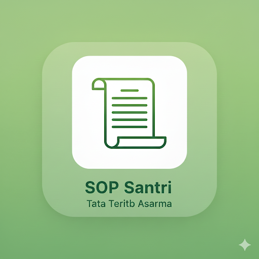

E-SANTRI
Absensi
Tahfidz
Al-Quran
Kamus

Perpus
Izin
← Kembali
Title
Subtitle description.
📋 Status Terbaru
Data akan diperbarui secara real-time.
⚙️ Pengaturan Fitur
Klik untuk memodifikasi preferensi.
MULAI SEKARANG